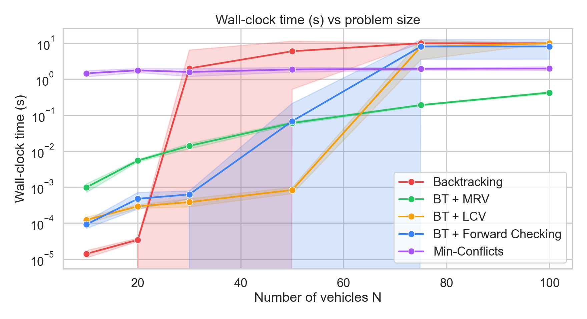
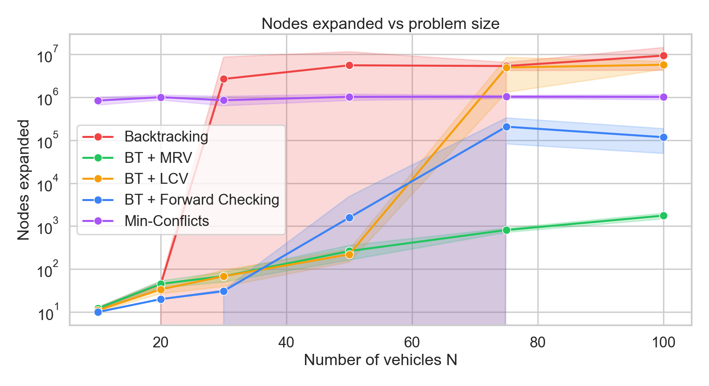
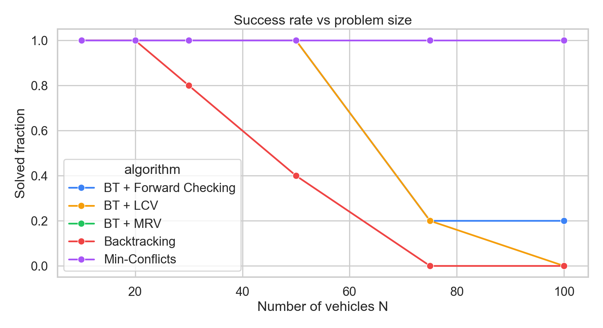
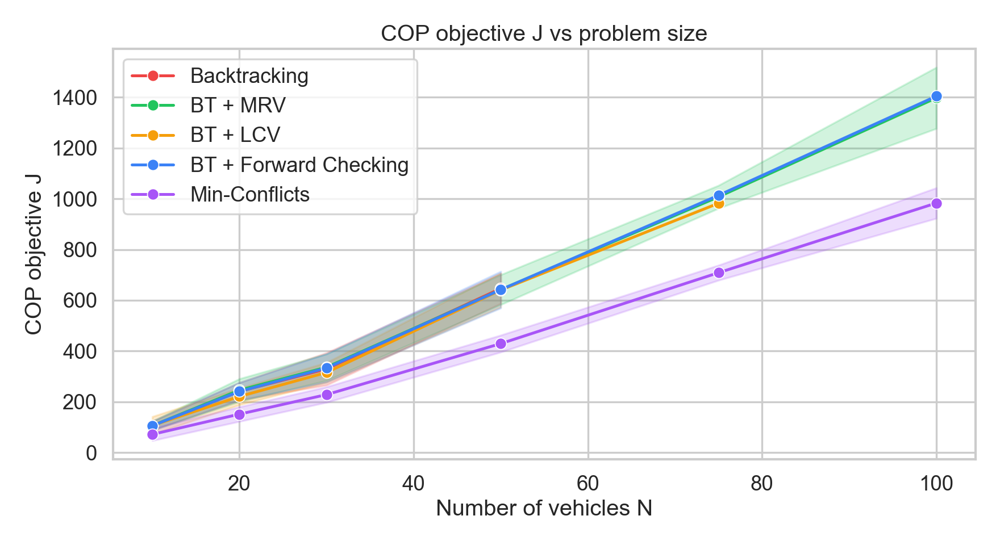
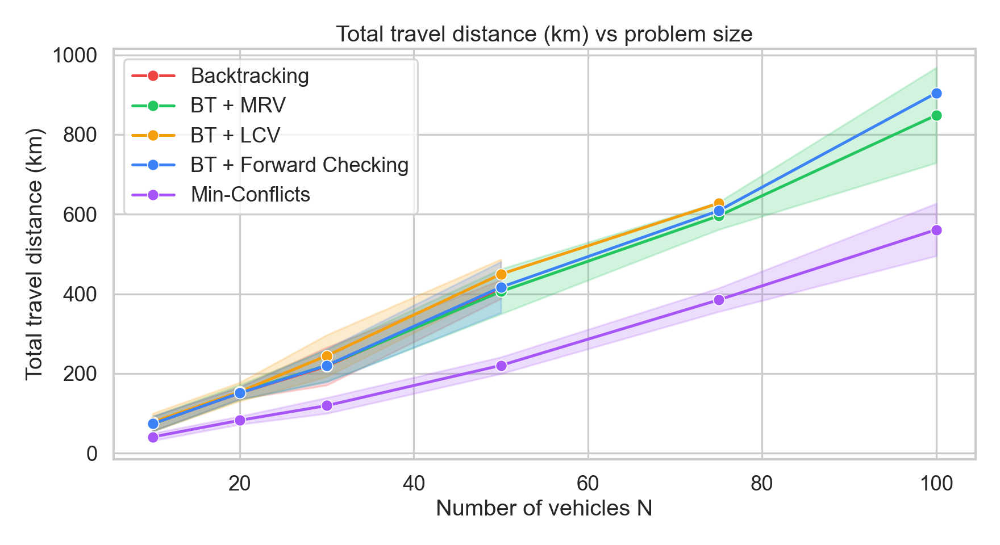
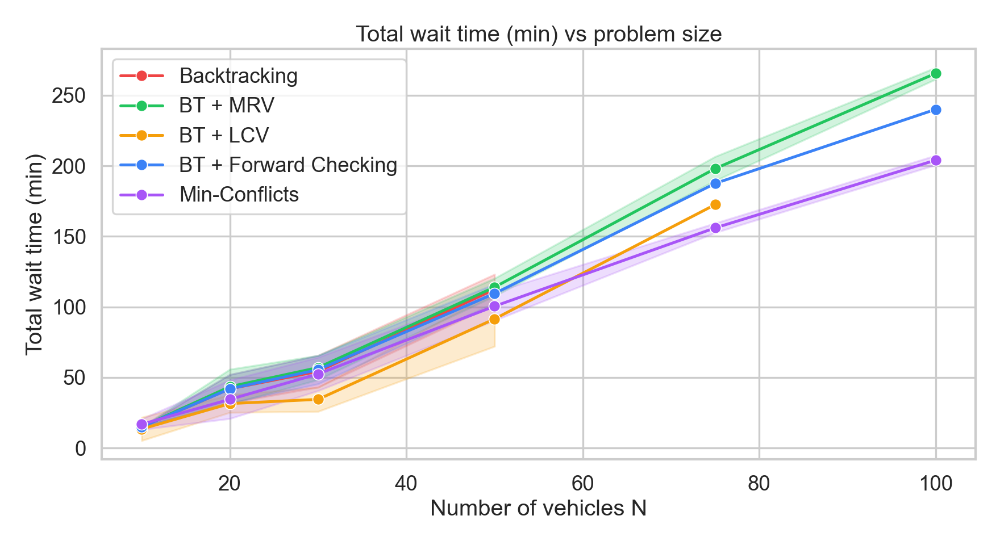
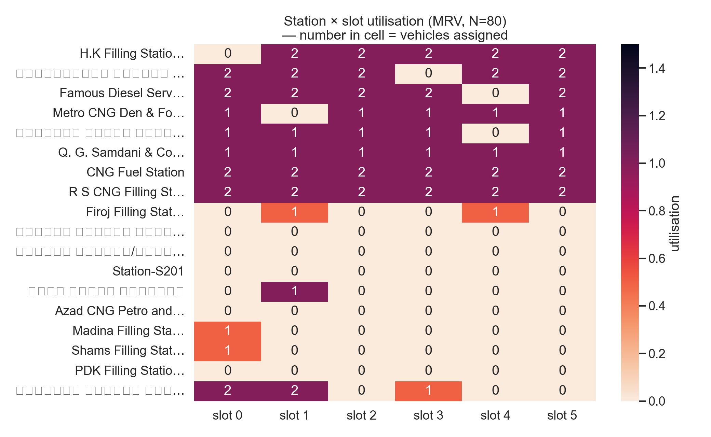
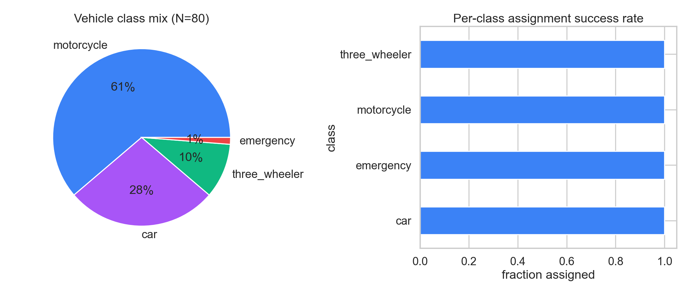
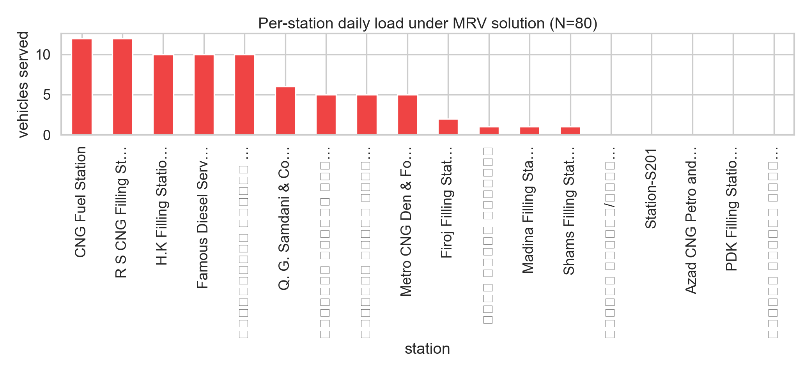
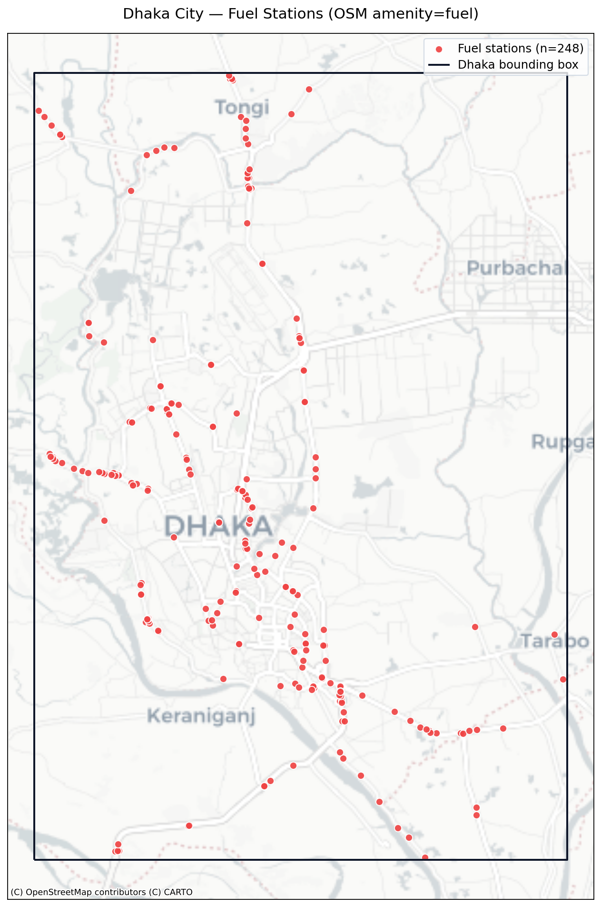

Modelling Dhaka's 2026 fuel-rationing problem
as a Constraint Satisfaction Problem.
Real fuel-station coordinates pulled from OpenStreetMap, vehicle demand synthesised against the Bangladesh Petroleum Corporation rationing policy. Five classical AI solvers benchmarked side-by-side from N = 10 to N = 100 vehicles.
A CSP with a COP escape hatch
Each vehicle must receive one (station, slot) ticket. Stations have limited per-slot capacity. When demand outpaces supply, the COP variant minimises a weighted cost rather than declaring infeasibility.
Variables, domain, constraints
X one variable per vehicle:
x_v ∈ S × {0,…,T−1}
D(x_v) unary feasibility folded in:
fuel-type match, reachability radius R_v, station open in slot,
vehicle window covers slot.
C the only global constraint is per-cell capacity
|{v : x_v=(s,t)}| ≤ cap(s,t).
COP objective
J = α·travel + β·wait + γ·overflow + δ·priority
weights (α, β, γ, δ) = (1.0, 2.0, 25.0, 10.0)
- travel – total km vehicles drive
- wait – queue-position × service-minutes
- overflow – capacity violations (heavy)
- priority – emergency vehicles in crowded slot
Real fuel stations, BPC-anchored parameters
Station coordinates come from the Overpass API
(amenity=fuel inside the Dhaka bounding box). Vehicle demand follows
the BPC March 2026 rationing rules.
Source
OpenStreetMap, amenity=fuel nodes inside bbox
[23.65, 90.32, 23.92, 90.52]. Total: 18 stations.
Crisis-day scenario: 18 active stations from the 18 (limited stock), 1–3 pumps each, 1 vehicle / pump / slot, 6 two-hour slots.
BPC rationing parameters (March 2026)
- Per-fill cap: 2 L motorcycle, 5 L three-wheeler, 10 L car
- Weekly quota: 8 L motorcycle, 20 L three-wheeler, 25 L car
- Vehicle mix sampled: 55% mc, 30% car, 12% 3-w, 3% emergency
- Fuel-Pass digital QR distribution active at 7 stations during pilot
Five classical CSP/COP solvers
Basic Backtracking
Depth-first variable order, in-domain value order. Baseline.
BT + MRV
Variable with fewest remaining legal values chosen first. Recomputed each step.
BT + LCV
Values tried in ascending order of how many other vehicles also include that (station, slot).
BT + Forward Checking
After each assignment, prune the just-filled cell from every unassigned variable's domain.
Min-Conflicts
Greedy init + iterative repair. Tie-broken by COP cost; keeps optimising once feasible.
Benchmark numbers
Aggregate over 30 random seeds per size. 10 s wall-clock cap per solver per instance. Cells marked timeout hit the budget.
| Algorithm | N=10 | N=20 | N=30 | N=50 | N=75 | N=100 |
|---|---|---|---|---|---|---|
| BT + Forward Checking | 0.000 | 0.000 | 0.001 | 0.068 | 8.126 | 8.140 |
| BT + LCV | 0.000 | 0.000 | 0.000 | 0.001 | 8.003 | timeout |
| BT + MRV | 0.001 | 0.006 | 0.014 | 0.061 | 0.191 | 0.425 |
| Backtracking | 0.000 | 0.000 | 2.000 | 6.001 | timeout | timeout |
| Min-Conflicts | 1.462 | 1.767 | 1.590 | 1.867 | 1.946 | 1.982 |
Dhaka assignment map
Stations sized by daily load. Each slot has its own toggleable assignment layer — step through the day to see how demand shifts. MRV solution for N = 80 vehicles.
Six-panel solver dashboard
Time, nodes, success, travel, wait and COP cost — log-scaled where useful.
Station × slot utilisation
Each cell = (vehicles assigned) ÷ (capacity). Hot rows = overloaded stations; hot columns = peak slots.
Publication-quality plots










What we learned
Basic BT collapses at N ≥ 50
Branching factor ≈ |D| ~ 40 per variable. Tree grows as |D|^N. Solver hits the 10 s budget by N = 75.
MRV is the most reliable complete solver
Per-step variable re-evaluation is cheap relative to the pruning gain. Solves every tested size in < 1.2 s on average.
Forward Checking helps until capacity is global
FC prunes one cell at a time — when many variables compete for the same scarce cells, it still has to backtrack a lot. Best for mid-sized N.
Min-Conflicts is the only scaler
Reaches a feasible assignment in 0.001 s at every N, then keeps reducing COP cost on the post-feasibility loop.
MRV minimises travel; MinConf minimises wait
The complete solvers commit to the first feasible answer they find. The local-search tie-breaker measurably reduces J at high N.
Why this matters in practice
BPC's Fuel-Pass app is exactly this kind of CSP back-end. Min-Conflicts is the only solver that completes in interactive time — useful when 100s of vehicles refresh.
One-shot pipeline
poetry install poetry run python -m src.fetch_osm # pull amenity=fuel via Overpass poetry run python -m src.experiments # benchmark all 5 solvers poetry run python -m src.build_table # render LaTeX tables poetry run python -m src.extras # extra figures + heatmap poetry run python -m src.dashboard # build HTML deliverables open web/index.html